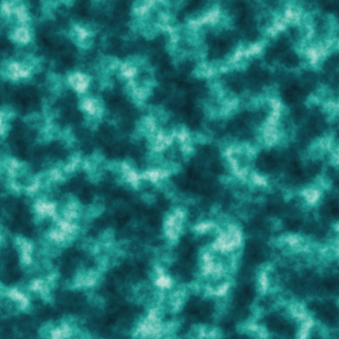
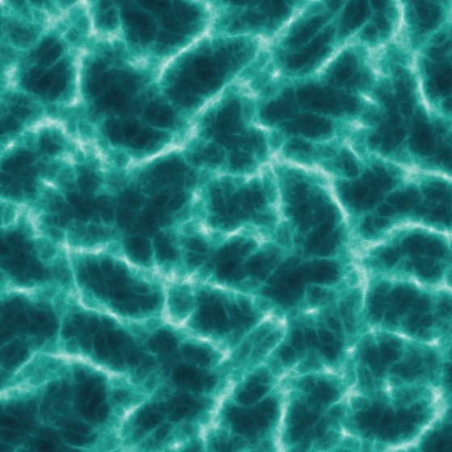
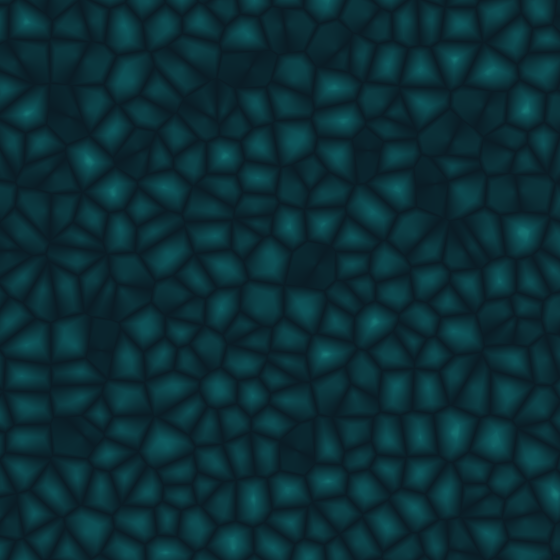
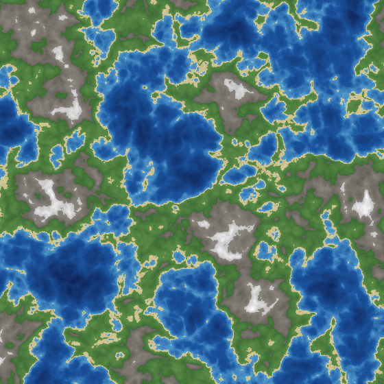
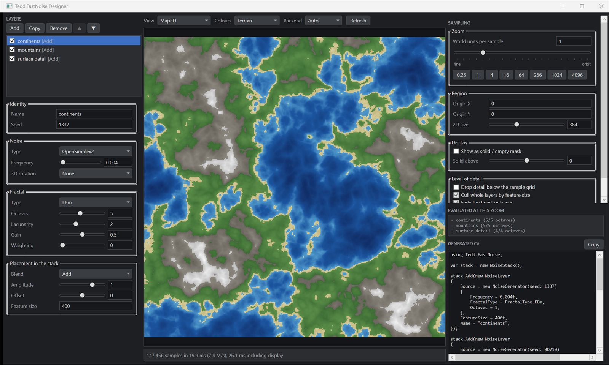

Tedd.FastNoise
Deterministic coherent noise for voxel worlds and terrain, built for bulk generation rather than one sample at a time.


Deterministic coherent noise for voxel worlds and terrain, built for bulk generation rather than one sample at a time.
The algorithms started as a port of FastNoiseLite, with the generation loop rebuilt around filling buffers.
A noise library that only offers GetNoise(x, y, z) forces you to call it once per
voxel. That throws away the two things that make bulk generation fast: sixteen lanes of a
vector register doing the same arithmetic on adjacent coordinates, and the fact that a chunk's
worth of samples is independent work that can be spread across cores. Neither is available to
a function that returns one float.
var noise = new NoiseGenerator(seed: 1337) { NoiseType = NoiseType.OpenSimplex2, FractalType = FractalType.FBm, Octaves = 5, Frequency = 0.005f, }; // One 16x16x256 world column, vectorised across every core. var density = new float[16 * 256 * 16]; noise.Fill(density, new GridRegion3D(chunkX * 16, 0, chunkZ * 16, 16, 256, 16));
Scalar, SIMD and parallel fills are bit-for-bit equal, on x86 and on ARM, at any vector width. A client with AVX-512 and a server on the scalar fallback agree on where the ground is — and the test suite asserts exact equality, not closeness.
The kernels were restructured to vectorise, and every such rewrite can change a value by an ULP unnoticed. An unmodified copy of FastNoiseLite is vendored as a test oracle and every kernel is compared against it exactly. It caught two real bugs.
Continents, mountains, detail, masks. Compiling a stack flattens it so a fill runs every layer against coordinates held in registers, instead of writing a buffer per layer and reading them all back.
Octaves finer than the sample grid contribute aliasing, not detail — and the aliasing changes as the camera moves, so distant terrain boils. Level-of-detail culling drops them, which is both cheaper and more stable.
Rendered by the library itself, as part of building this page.






Each layer is an independently tunable generator. The stack is what fuses them into one pass.
var stack = new NoiseStack { Lod = LodPolicy.Automatic with { CullLayers = true } }; stack.Add(new NoiseLayer { Source = new NoiseGenerator(1) { Frequency = 0.0002f, FractalType = FractalType.FBm, Octaves = 4 }, FeatureSize = 2000f, Name = "continents", }); stack.Add(new NoiseLayer { Source = new NoiseGenerator(2) { Frequency = 0.002f, FractalType = FractalType.Ridged, Octaves = 5 }, Blend = LayerBlend.Add, Amplitude = 0.4f, FeatureSize = 200f, Name = "mountains", }); // Immutable, thread-safe, and flattened. Hand it to workers. var world = stack.Compile(); world.Fill(heights, new GridRegion2D(0, 0, 512, 512, step: 1f)); // walking: all layers world.Fill(overview, new GridRegion2D(0, 0, 512, 512, step: 512f)); // orbit: continents only
Blends are Add, Subtract, Multiply, Min,
Max, Replace and Lerp. The first layer to survive culling
initialises the accumulator.
A Windows app for building a stack visually: live 2D map, rotatable 3D heightmap, rotatable voxel volume, zoom sweep, and the C# to reproduce whatever is on screen.

Self-contained: no .NET installation required. Unzip and run
Tedd.FastNoise.Designer.exe.
Measured, not asserted. Every claim here comes from the benchmark project in the repository,
against the frozen 2020 implementation in archive/v1 and against FastNoiseLite
called per sample.
Reproduce with
dotnet run -c Release --project src/Tedd.FastNoise.Benchmark -- --filter "*".
dotnet add package Tedd.FastNoise
Targets .NET 10. .NET 11 is validated in CI and enabled with
-p:EnableNet11=true until it ships.